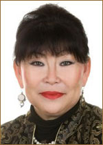

Председатель Ассоциации

Шагдырова Надежда Баторовна – известный в Бурятии и России государственный
и общественный деятель в области культуры и искусства. С июля 2003 года по август 2014
года Шагдырова Н.Б. работала в должности директора Бурятского республиканского
театра кукол «Ульгэр». Богатый жизненный и трудовой опыт, накопленный за
десятилетия работы в учреждениях культуры и искусства Бурятии, сочетание деловых
качеств современного менеджера с глубокими знаниями специфики театрального,
творческого процесса позволили Надежде Баторовне поднять театр «Ульгэр» на высокий
уровень. Благодаря усилиям директора Шагдыровой Н.Б., театр обладает обширным
репертуаром и ведет активную гастрольную деятельность в России и в странах зарубежья.
Театр – постоянный участник и многократный лауреат, обладатель других призов
высокого достоинства различных региональных, общероссийских, международных
театральных фестивалей и других форумов. «Ульгэр» четыре раза становился Лауреатом
Национальной театральной премии «Золотая Маска» в номинациях: «Лучший кукольный
спектакль», «Лучшая работа режиссера в театре кукол», «Лучшая работа актера в театре
кукол».
Надежда Баторовна всегда выступает в роли инициатора мероприятий, которые способствуют пропаганде и продвижению культуры Бурятии в России и во всем мире, а также вносят заметный вклад в сближение и взаимообогащение культур разных народов, в укрепление дружбы и братского сотрудничества между людьми. Так, с 2003 года существует Договор о сотрудничестве и творческом партнерстве БРТК «Ульгэр» с Монгольским Национальным театром кукол. В 2004 году состоялись большие гастроли «Ульгэра» по Монголии, где в самых отдаленных аймаках страны спектакли бурятского театра увидели 3 тысячи монгольских ребятишек. Шагдыровой Н. Б. был вручен орден Чингисхана «За достижения в области культуры, искусства и образования», а также диплом академика университета имени Чингисхана. Также в 2004 году «Ульгэр» совместно с Монгольским театром кукол принял участие в международном фестивале кукольных театров «Кееда» в Республике Калмыкия. С 2007 года театр кукол «Ульгэр» является организатором Международного фестиваля театров кукол «Путь кочевника» и входящего в его программу проекта «Байкальское кольцо», которые способствуют укреплению не только профессиональных связей между театрами регионов, прилегающих к озеру Байкал, и зарубежных партнеров, но и развитию взаимопонимания, уважения, добрососедства и дружеского сотрудничества.
Профессиональную и традиционную культуру Бурятии благодаря творчеству театра «Ульгэр» и подвижничеству Шагдыровой Н. Б., знают далеко за пределами России. В июне 2009 года прошли гастроли театра в городах Хорватии. С 27 мая по 4 июня 2012 года группа от театра «Ульгэр» под руководством Шагдыровой Н. Б. в составе делегации России приняла участие в работе 21-го Конгресса международного союза деятелей кукольных театров (Unima) и Всемирного фестиваля театров кукол 2012 в г.Чэнду (Китай). В сентябре 2012 года под руководством Шагдыровой Н. Б. театр кукол «Ульгэр» провел II Международный фестиваль театров кукол «Путь кочевника» и осуществил проект «Байкальское кольцо». В них приняли участие 93 кукольника из Москвы, Санкт- Петербурга, Железногорска, Иркутска, Вологды, Монголии, Сербии, Хорватии, Швеции. В 2013 году под руководством Н.Б. Шагдыровой театр принял участие в III Международном кукольном карнавале в г. Алма-Аты, завоевав диплом в номинации «Лучший режиссер» за спектакль «Дерсу». С 2014 года Н.Б. Шагдырова является Президентом театра кукол «Ульгэр» и продолжает активную работу по развитию театра. Давно поставлен вопрос о капитальной комплексной реконструкции и модернизации здания театра с учетом современных требований к качеству театрального пространства для детей как территории всестороннего и многообразного творческого развития. Совместно с дирекцией, художественным руководством театра Н.Б. Шагдырова ставит задачи по преобразованию театра кукол в театр для детей и юношества, в творческую площадку для реализации разнообразных театральных и зрелищных экспериментов и новаций в содружестве с российскими и зарубежными театрами, что позволит самой обширной аудитории расширить представления о Бурятии, узнать и понять культуру, менталитет, чувства, обычаи народов Бурятии. А бурятскому зрителю, в В 2013 году от Союза театральных деятелей Республики Бурятия Надежда Баторовна была избрана в Общественную палату Республики Бурятия и возглавила Комитет по культуре, спорту и молодежной политике. А в 2016 году Н.Б. Шагдырова была избрана в Общественную Палату РБ второго созыва от Народного Хурала Республики Бурятия и стала Председателем комиссии по культуре, гармонизации межнациональных и межконфессиональных отношений и СМИ.
Очень большое внимание Надежда Баторовна в своей деятельности уделяет общественной жизни города, сотрудничает с разными организациями и учреждениями. Так, например, театр сотрудничает с республиканскими общественными организациями, Республиканским реабилитационным центром для детей с ограниченными возможностями «Светлый», Санаторным детским домом для детей-сирот и детей, оставшихся без попечения родителей. На протяжении нескольких лет под руководством Надежды Баторовны совместно с благотворительным фондом «Пусть всегда будет солнце» успешно осуществляется инновационный проект «Доктор Клоун».
В ноябре 2016 года Н.Б. Шагдырова принимала активное участие в организации и проведении Дней культуры города Улан-Удэ в Москве и Санкт- Петербурге, посвященных 350-летию основания столицы Бурятии. Была награждена званием «Заслуженный работник культуры Республики Бурятия» в 1998г., почётными грамотами Министерства культуры Республики Бурятия 2001г., Народного Хурала Республики Бурятия 2009г.
Надежда Баторовна всегда выступает в роли инициатора мероприятий, которые способствуют пропаганде и продвижению культуры Бурятии в России и во всем мире, а также вносят заметный вклад в сближение и взаимообогащение культур разных народов, в укрепление дружбы и братского сотрудничества между людьми. Так, с 2003 года существует Договор о сотрудничестве и творческом партнерстве БРТК «Ульгэр» с Монгольским Национальным театром кукол. В 2004 году состоялись большие гастроли «Ульгэра» по Монголии, где в самых отдаленных аймаках страны спектакли бурятского театра увидели 3 тысячи монгольских ребятишек. Шагдыровой Н. Б. был вручен орден Чингисхана «За достижения в области культуры, искусства и образования», а также диплом академика университета имени Чингисхана. Также в 2004 году «Ульгэр» совместно с Монгольским театром кукол принял участие в международном фестивале кукольных театров «Кееда» в Республике Калмыкия. С 2007 года театр кукол «Ульгэр» является организатором Международного фестиваля театров кукол «Путь кочевника» и входящего в его программу проекта «Байкальское кольцо», которые способствуют укреплению не только профессиональных связей между театрами регионов, прилегающих к озеру Байкал, и зарубежных партнеров, но и развитию взаимопонимания, уважения, добрососедства и дружеского сотрудничества.
Профессиональную и традиционную культуру Бурятии благодаря творчеству театра «Ульгэр» и подвижничеству Шагдыровой Н. Б., знают далеко за пределами России. В июне 2009 года прошли гастроли театра в городах Хорватии. С 27 мая по 4 июня 2012 года группа от театра «Ульгэр» под руководством Шагдыровой Н. Б. в составе делегации России приняла участие в работе 21-го Конгресса международного союза деятелей кукольных театров (Unima) и Всемирного фестиваля театров кукол 2012 в г.Чэнду (Китай). В сентябре 2012 года под руководством Шагдыровой Н. Б. театр кукол «Ульгэр» провел II Международный фестиваль театров кукол «Путь кочевника» и осуществил проект «Байкальское кольцо». В них приняли участие 93 кукольника из Москвы, Санкт- Петербурга, Железногорска, Иркутска, Вологды, Монголии, Сербии, Хорватии, Швеции. В 2013 году под руководством Н.Б. Шагдыровой театр принял участие в III Международном кукольном карнавале в г. Алма-Аты, завоевав диплом в номинации «Лучший режиссер» за спектакль «Дерсу». С 2014 года Н.Б. Шагдырова является Президентом театра кукол «Ульгэр» и продолжает активную работу по развитию театра. Давно поставлен вопрос о капитальной комплексной реконструкции и модернизации здания театра с учетом современных требований к качеству театрального пространства для детей как территории всестороннего и многообразного творческого развития. Совместно с дирекцией, художественным руководством театра Н.Б. Шагдырова ставит задачи по преобразованию театра кукол в театр для детей и юношества, в творческую площадку для реализации разнообразных театральных и зрелищных экспериментов и новаций в содружестве с российскими и зарубежными театрами, что позволит самой обширной аудитории расширить представления о Бурятии, узнать и понять культуру, менталитет, чувства, обычаи народов Бурятии. А бурятскому зрителю, в В 2013 году от Союза театральных деятелей Республики Бурятия Надежда Баторовна была избрана в Общественную палату Республики Бурятия и возглавила Комитет по культуре, спорту и молодежной политике. А в 2016 году Н.Б. Шагдырова была избрана в Общественную Палату РБ второго созыва от Народного Хурала Республики Бурятия и стала Председателем комиссии по культуре, гармонизации межнациональных и межконфессиональных отношений и СМИ.
Очень большое внимание Надежда Баторовна в своей деятельности уделяет общественной жизни города, сотрудничает с разными организациями и учреждениями. Так, например, театр сотрудничает с республиканскими общественными организациями, Республиканским реабилитационным центром для детей с ограниченными возможностями «Светлый», Санаторным детским домом для детей-сирот и детей, оставшихся без попечения родителей. На протяжении нескольких лет под руководством Надежды Баторовны совместно с благотворительным фондом «Пусть всегда будет солнце» успешно осуществляется инновационный проект «Доктор Клоун».
В ноябре 2016 года Н.Б. Шагдырова принимала активное участие в организации и проведении Дней культуры города Улан-Удэ в Москве и Санкт- Петербурге, посвященных 350-летию основания столицы Бурятии. Была награждена званием «Заслуженный работник культуры Республики Бурятия» в 1998г., почётными грамотами Министерства культуры Республики Бурятия 2001г., Народного Хурала Республики Бурятия 2009г.